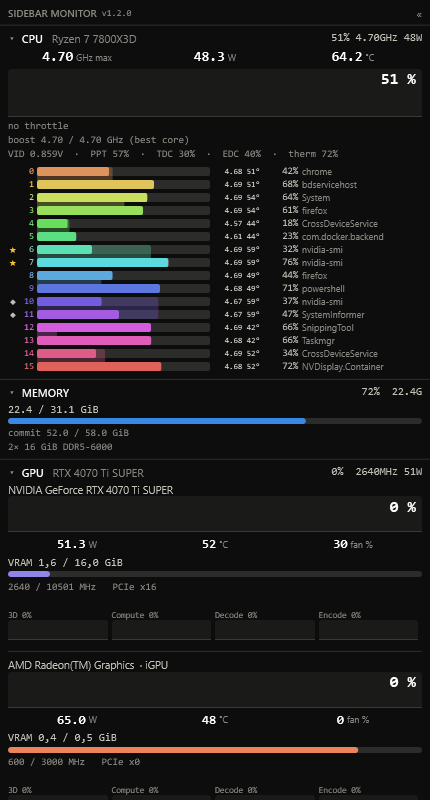
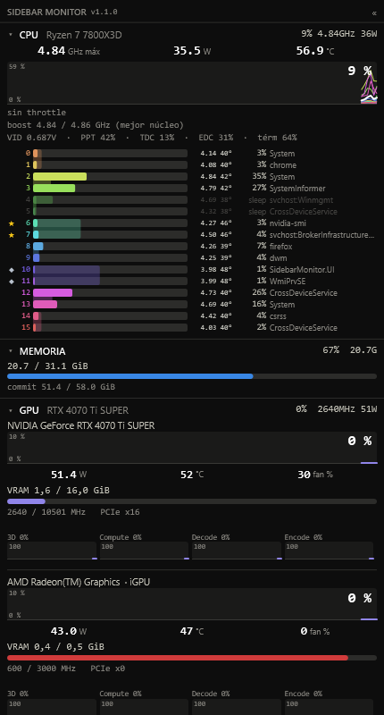
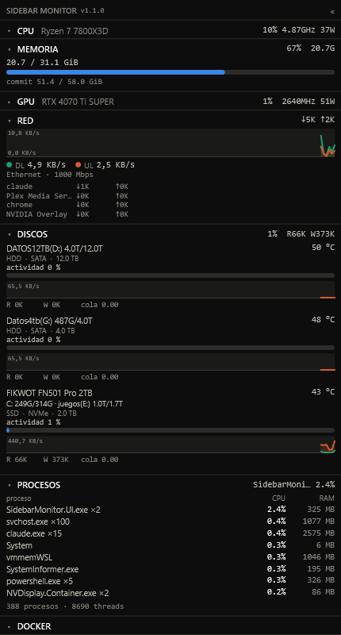

A native, always-on system monitor for Windows 11 — CPU, per-core, GPU, memory, network, disks and processes in one lean panel on your second screen. No HWiNFO, no dubious drivers, no telemetry.

In 2025 Windows added the WinRing0 kernel driver to its vulnerable-driver blocklist. Overnight, hardware monitors that read sensors through it — including Sidebar Diagnostics — stopped working on machines with Memory Integrity / Core Isolation (HVCI) enabled. SidebarMonitor takes a different route by design: it ships no kernel driver of its own and reads sensors through paths that are signed and HVCI-safe — the AMD Ryzen Master Monitoring SDK, NVML, ADLX and native Windows APIs.
Runs with Memory Integrity on — the whole reason it exists. No WinRing0, no kernel driver of ours.
The sampling agent is a NativeAOT binary: ~2 MB, ~60 ms cold start, allocation-free hot path.
Per-core frequency, temperature and C0/sleep residency; best-core ★; power caps (PPT/TDC/EDC); throttle state.
Full telemetry for NVIDIA (NVML) and AMD (ADLX), plus per-engine activity for any GPU via D3DKMT.
Network bandwidth by process, disk temperature (NVMe + SATA), SSD/HDD, activity graphs.
Nothing leaves your machine. No analytics, no crash reporting, no network activity in normal use.


Everything renders on any Windows 11 x64 machine, and the app degrades gracefully when a source is missing.
| Feature | Needs | Without it |
|---|---|---|
| CPU temp / power / per-core temp / throttle | AMD Ryzen + Ryzen Master SDK (accepted on first run) | Those fields show “—”; Intel is detected and explained. |
| NVIDIA GPU temp/power/fan/VRAM | NVIDIA driver (NVML) | Per-engine activity via D3DKMT. |
| AMD GPU temp/power/fan/clocks/VRAM | AMD Adrenalin driver (ADLX) | Per-engine activity via D3DKMT. |
| Per-core process colours, per-process network | The elevated helper | Bars still show usage; no per-process attribution. |
A NativeAOT agent samples sensors unelevated and publishes to shared memory via a lock-free seqlock. An optional elevated helper runs the kernel ETW session and the AMD SDK. The WPF panel renders it — docked or floating, resizable, click-through. WPF can’t be AOT-compiled and the helper needs a different elevation manifest, so keeping them separate keeps the agent native and unelevated. Read the architecture →
SidebarMonitor collects nothing and sends nothing. It samples local hardware and renders it — no analytics, no crash reporting, no sockets to any server. Your settings and logs stay on your disk. Privacy policy →
Download the installer, or grab it with
winget install WRCX.SidebarMonitor. Two builds, your choice:
full bundles AMD's sensor SDK (works offline), lite ships none
of AMD's binaries and uses the SDK you install yourself.